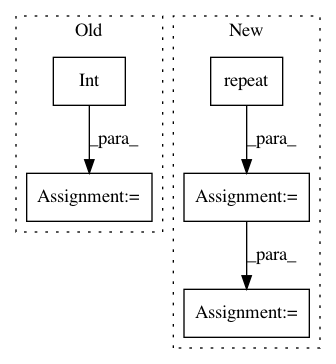

371ffe8f69e9f76978dd4254534285129f0f3d6c,examples/common.py,,distribution_accuracy,#Any#Any#,68
Before Change
tiled_a = tf.tile(tiled_a, [1, int(tiled_a.get_shape()[0]), 1])
tiled_b = b
tiled_b = tf.reshape(tiled_b, [1, int(tiled_b.get_shape()[0]), int(tiled_b.get_shape()[1])])
tiled_b = tf.tile(tiled_b, [int(tiled_b.get_shape()[0]), 1, 1])
difference = tf.abs(tiled_a-tiled_b)
difference = tf.reduce_min(difference, axis=1)
difference = tf.reduce_sum(difference, axis=1)
return tf.reduce_sum(difference, axis=0)
def batch_accuracy(a, b):
After Change
This works best on a large batch of small inputs.
shape = a.shape
tiled_a = a.view(shape[0], 1, shape[1]).repeat(1, shape[0], 1)
tiled_b = b.view(1, shape[0], shape[1]).repeat(shape[0], 1, 1)
difference = torch.abs(tiled_a-tiled_b)
difference = torch.min(difference, dim=1)[0]
difference = torch.sum(difference, dim=1)
return torch.sum(difference, dim=0)
def batch_accuracy(a, b):
In pattern: SUPERPATTERN
Frequency: 3
Non-data size: 5
Instances
Project Name: HyperGAN/HyperGAN
Commit Name: 371ffe8f69e9f76978dd4254534285129f0f3d6c
Time: 2020-06-22
Author: martyn@255bits.com
File Name: examples/common.py
Class Name:
Method Name: distribution_accuracy
Project Name: nilearn/nilearn
Commit Name: 7af3a07a9fe836f3dc7350732dd71cb214853533
Time: 2015-12-04
Author: arthur.mensch@m4x.org
File Name: nilearn/decomposition/base.py
Class Name:
Method Name: mask_and_reduce
Project Name: IBM/adversarial-robustness-toolbox
Commit Name: b09284f6ba59659a9819e68244a7a785016c87c5
Time: 2020-05-24
Author: beat.buesser@ie.ibm.com
File Name: art/attacks/evasion/shadow_attack.py
Class Name: ShadowAttack
Method Name: generate